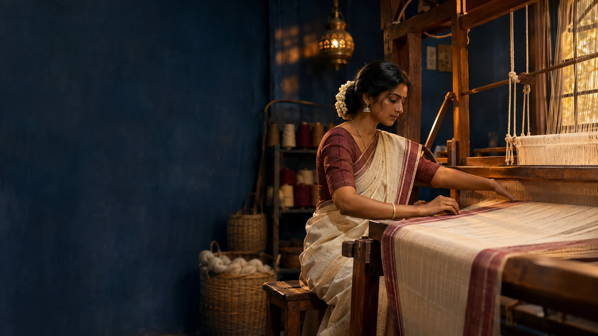
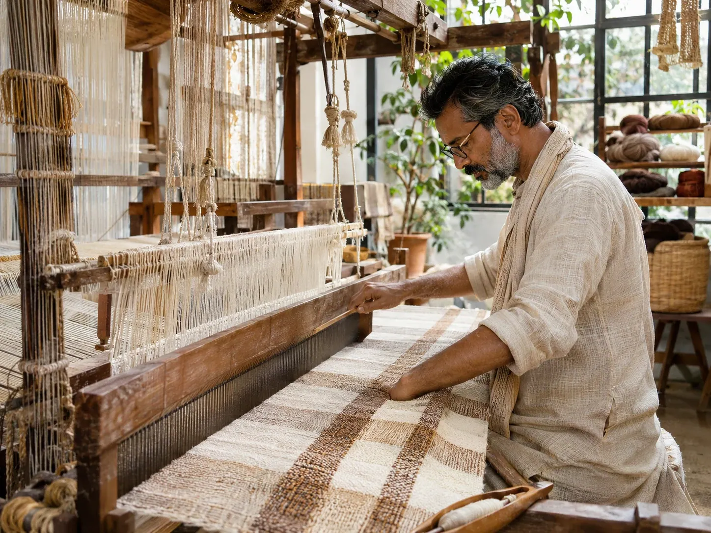
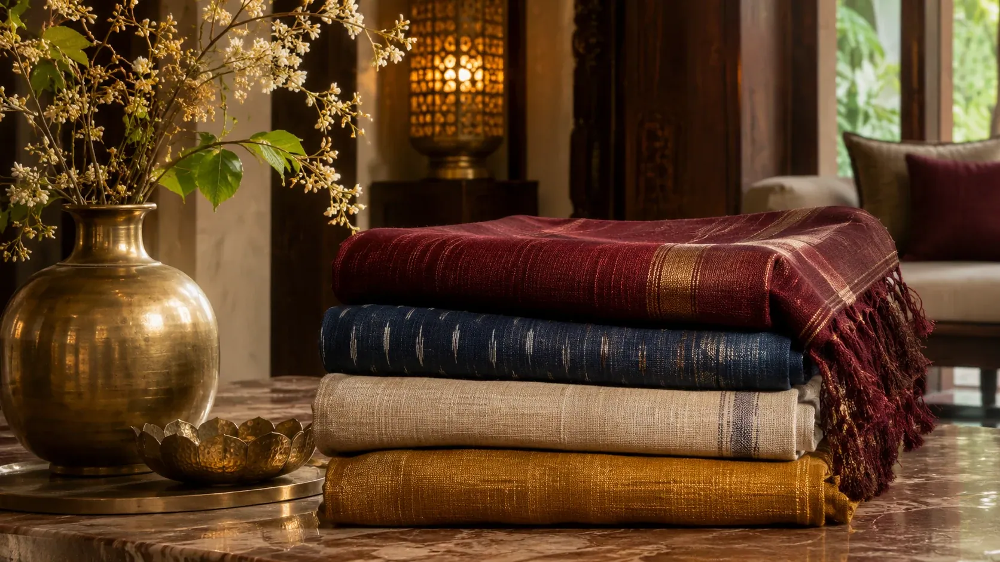

Kanchipuram
Silk traditions
Discover the techniques, textures and weaving traditions behind textiles made with patience and skill.


Step into the world of looms, yarns and handwoven heritage. See how everyday fabrics are brought to life by skilled artisans.
Silk traditions
Weave heritage
Ikat art
Weaving legacy

Traditional fabrics can blend beautifully with today’s lifestyle — for work, travel, celebrations and everyday wear.
Explore the LookA foundational interlacing of warp and weft that can create beautifully versatile cotton cloth.
Selected yarns may be resist-dyed before weaving. Pattern edges can reveal the method and the care of yarn alignment.
Contrasting structure and colour can transform the look of a saree, wrap or furnishing piece.
Browse textile examples inspired by the long, varied craft traditions of India.